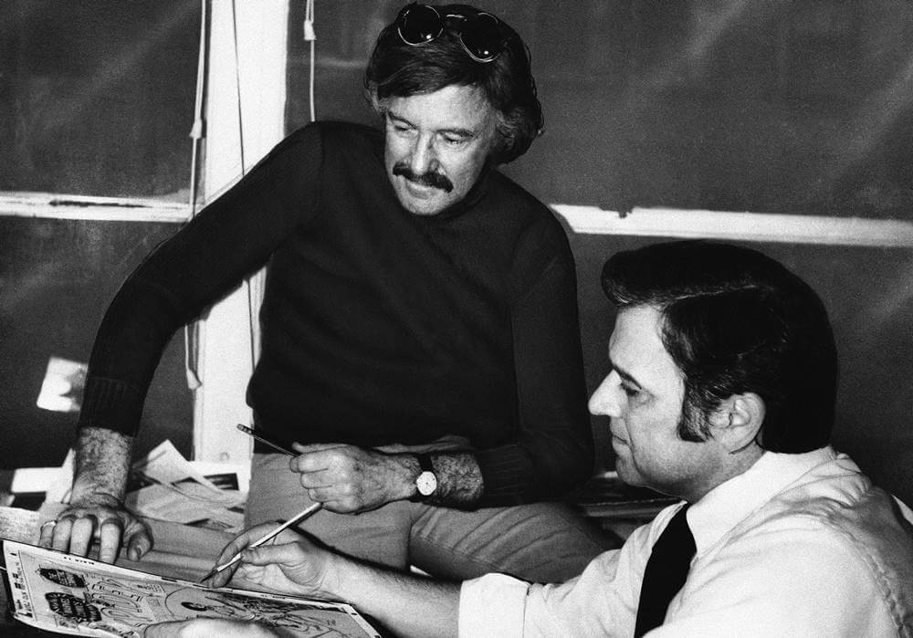
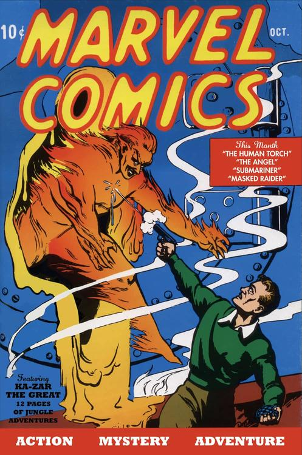
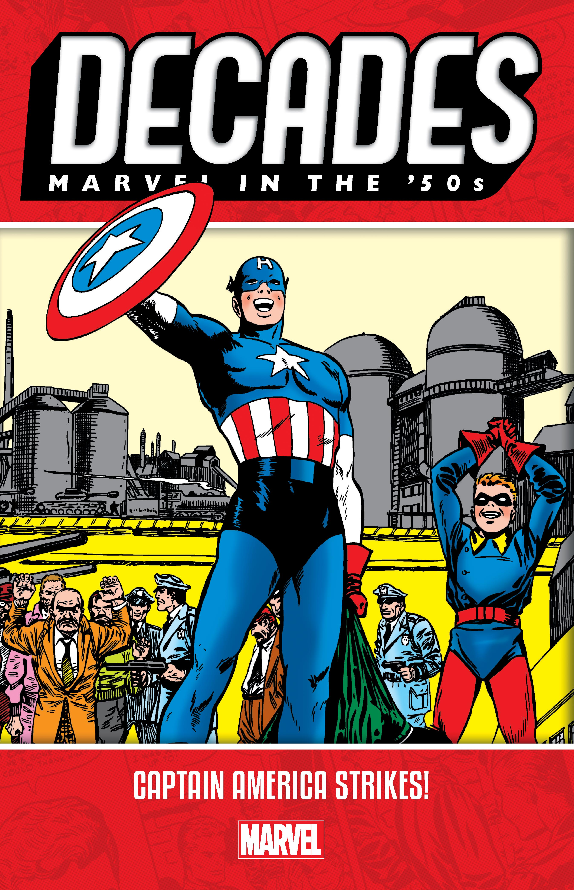
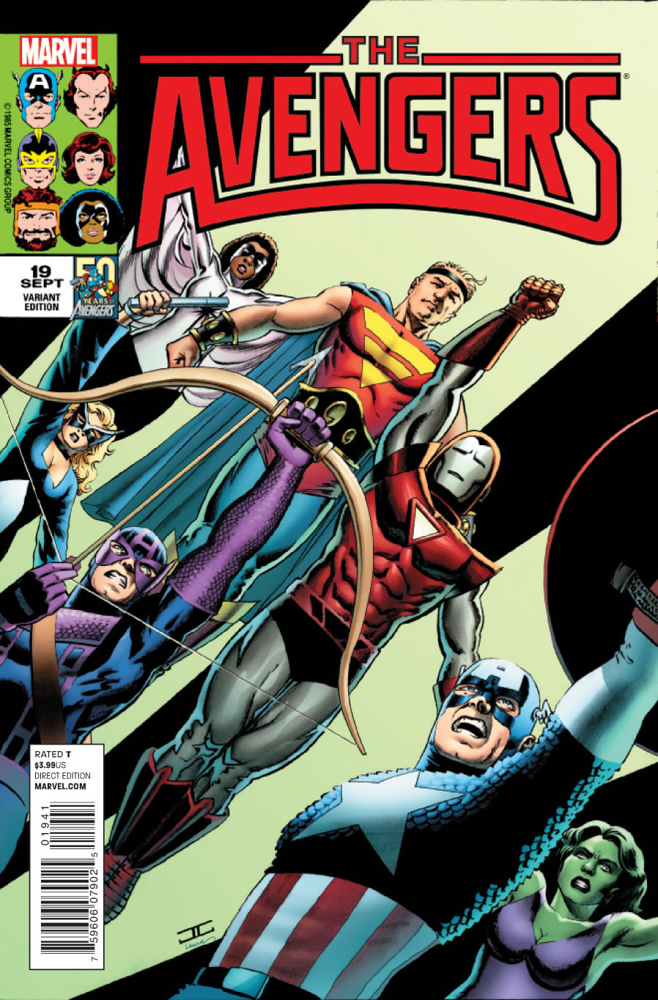

A Marvel Comics é uma editora norte-americana de mídias relacionadas. Hoje a Marvel Comics é considerada a maior editora de histórias em quadrinhos do mundo. Em 2009, a The Walt Disney Company, adquiriu a Marvel Entertainment, a empresa mãe da Marvel.
A empresa conta com diversos personagens bem conhecidos como:
Homem-Aranha, Homem-Formiga, Capitão América,
A Marvel anteriormente Marvel Comics Group, começou em 1939 como Timely Comics e no início da década de 1950, se tornou conhecida como Atlas Comics. A marca Marvel começou em 1961, ano em que a empresa lançou Quarteto Fantástico e outros títulos de super-heróis criados por Stan Lee, Jack Kirby, Steve Ditko e muitos outros.
A Marvel Comics foi fundada por volta de 1930 e 1940 por Martin Goodman, com o nome de Timely Comics.[2] Goodman, um editor de revistas pulp[3] que começou a vender histórias de faroeste em 1933, expandiu suas atividades para um emergente - e até então bastante popular - mercado de revistas de histórias em quadrinhos originais.[4] Goodman começou a empresa na 330 West 42nd Street, New York City, New York. Ele detinha oficialmente os títulos de editor, editor-executivo e gerente de negócios, com Abraham Goodman ocupando oficialmente o cargo de publisher.[4] A primeira publicação ocorreu em 1939, com o número 1 da revista Marvel Comics, onde se deram as primeiras aparições do super-herói Tocha Humana e do anti-herói Namor, o Príncipe Submarino. A equipe por trás desse sucesso de vendas veio de uma outra editora, a Funnies, Inc., mas no ano seguinte, a própria equipe da editora ocupou este posto. Com a segunda edição, o título da série mudou para Marvel Mystery Comics.[5]
Nos anos 50, a Marvel atravessou tempos difíceis, da mesma maneira que as outras editoras. Goodman começou a publicar sob o nome de Atlas, uma distribuidora de sua propriedade, em Novembro de 1951. Atlas, ao invés de inovar, seguia as tendências populares na televisão e no cinema - faroestes e dramas de guerra em vigor por um tempo, monstros de cinema drive-in em outro - e mesmo outras revistas em quadrinhos, especialmente a linha de terror da EC Comics.
No início da década de 1970, uma série de novos diretores trabalharam para a empresa em mais uma época não favorável para esta indústria. No entanto, no final dessa década, a Marvel estava novamente com boa saúde, graças a novos números de HQ e principalmente pela renovação do título dos X-Men, arquitetado principalmente por Chris Claremont e John Byrne. Na década de 1980, Jim Shooter era o diretor. Apesar da sua personalidade controversa, conseguiu eliminar alguns dos males da empresa - como a não publicação das revistas no prazo devido - e promover mais um renascimento criativo na Marvel, fazendo com que seus gibis tornassem-se ainda mais vendidos .
